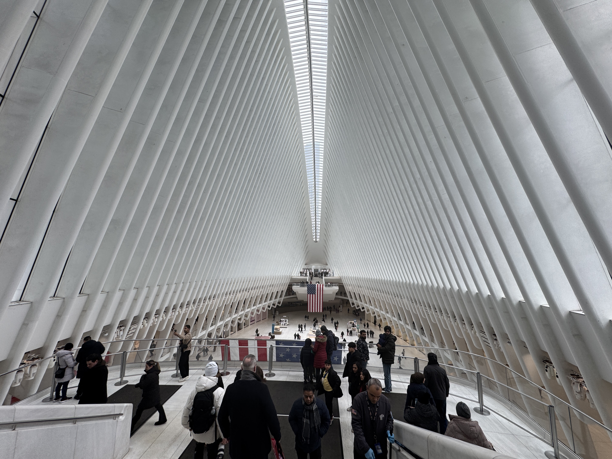
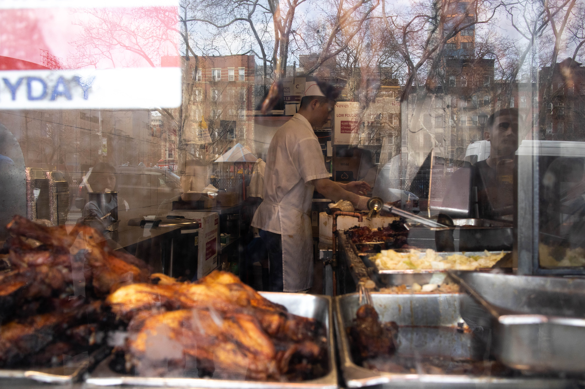
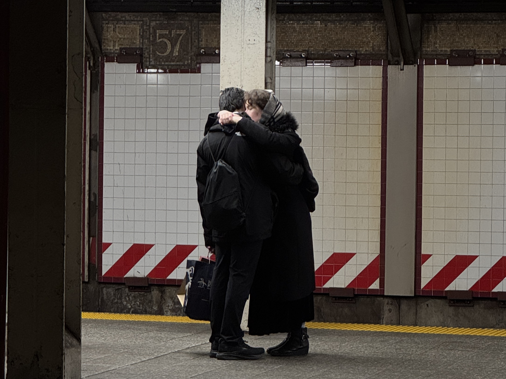
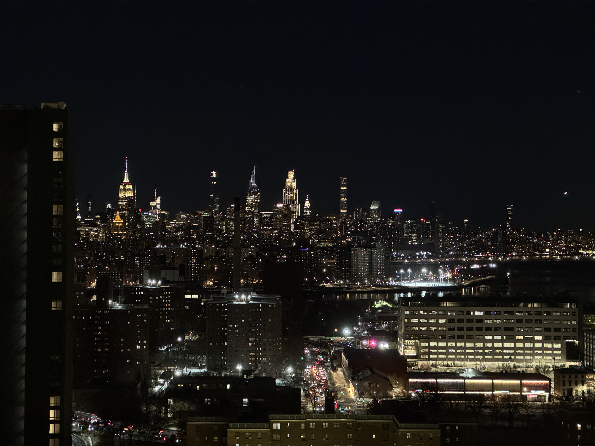

New York Mindset
I arrived in New York a week before my classes at NYU began. I spent those days wandering around, trying to familiarize myself with the city's geography. Having come here after working intensely in Korea, I arrived with very little energy left and found myself completely overwhelmed by New York's intensity. The frantic pace, the constant city noise, and the languages—both spoken and written—seemed to change every few steps I took. Citizen, an app that notifies you of nearby incidents, rang incessantly. All sorts of events were happening right around me, at all times.
What was particularly shocking was the exorbitant cost of living. I had already paid ten thousand dollars for housing and my visa before even setting foot here. The prices, which far exceeded my imagination, felt as if they were going to swallow me whole. I felt that if I stayed here too long, everything I had would be taken away. Yet, New York remains the most densely populated place on earth—the place where the most money gathers. Why do people come here, and how do they survive? What kind of mindset is required to endure this place? It seemed clear that a fierce mindset of some kind was sustaining this city.
Ambition
(…)
The mechanics of the city, the masters, well-form'd, beautiful-faced, looking you straight in the eyes,
(…)
A million people—manners free and superb—open voices—hospitality—the most courageous and friendly young men,
City of hurried and sparkling waters! city of spires and masts!
City nested in bays! my city! — Walt Whitman, “Mannahatta”



The dynamism that Whitman once praised seems to remain the default setting of New York even 150 years later. “Living hard” feels less like a choice and more like an obvious prerequisite, as essential as the air we breathe. Individual ambitions gather to form a massive wave.
However, the “shining eyes” Whitman admired might actually be a state of hyper-awareness born from neurotic energy. According to psychologist Jason Rentfrow's “Geographic Psychology” research, New York is the region with the highest level of “Neuroticism” in the United States. Here, working hard is not a choice, but a physiological reflex for survival. These busy people are surrendering themselves to the massive wave formed by the collective force of individual ambitions.
Hustle
What happens to a dream deferred?
Does it dry up
like a raisin in the sun?
(…)
Or does it explode? — Langston Hughes, “Harlem”

New York is a land of opportunity, but the pain of failing to seize those opportunities is extreme. The poetry of Langston Hughes serves as literary evidence of the fierce pressure under which countless “dreams deferred” sustain this city.
When you move into immigrant neighborhoods, the sophistication of skyscrapers disappears, replaced by streets filled with raw survival instincts. Yet, the dreams here do not seem merely deferred. Rather, there seems to be no luxury to even delay them. The rough hands of vendors opening their stalls in the early morning are the hottest engine of New York. For them, being fierce is not a means of self-actualization; it is the only weapon they have to protect their families and secure their future.
In Here is New York, E. B. White speaks of the settlers who come to the city in search of something: "The third resident is the person who was born somewhere else and came to New York in quest of something... it is this third city that accounts for New York’s high-strung quality, its poetic deportment, its dedication." He explains that because they are "ambitious people" who migrated from elsewhere to achieve a goal, the city is structured in a way that forces everyone to keep running.
Immersion
In this city where countless events erupt simultaneously, people seem to have mastered the art of maintaining their own frequency. People do not seem to experience major emotional shifts in response to the chaos around them. Even if someone is venting their fury on the subway, others pay them little mind. Those talking to themselves act and speak as they wish, indifferent to the gaze of others. While they might simply be used to their surroundings, to me, it looks like thorough self-immersion. It is about focusing solely on “oneself,” liberated from the perceptions of others. This individualism is another form of the fierce mindset that allows one to keep their sanity and survive in New York.

Combustion
My candle burns at both ends;
It will not last the night;
But ah, my foes, and oh, my friends—
It gives a lovely light! — Edna St. Vincent Millay, “First Fig”


At 11 PM, I go to Pebble Beach in Brooklyn and look at the Manhattan skyline across the water. The bright lights shine like stars. The windows of the forest of buildings, still lit at this hour, are evidence that someone is burning their energy at both ends. It is a life walking a tightrope between the risk of burnout and the thrill of achievement. New Yorkers likely feel the risk of burnout themselves. Nonetheless, they burn through the night to maintain the brilliant light of New York.
In Triumph of the City, economist Edward Glaeser explains why New York became a melting pot of human capital. First, he argues that the city’s high density allows talented people to collide, causing their knowledge and ambition to become contagious. Furthermore, beyond just working hard, the environment of being constantly compared to and stimulated by surrounding elites has made the "New York Mindset" a prerequisite for survival. In a sense, perhaps these fires—which refuse to be extinguished elsewhere—are gathered here, preventing one another from ever going out.
Conclusion
New York's intensity was forged in an environment where highly open and ambitious individuals gather in a confined space, stimulating one another within an extremely fast pace of life. It is an environment that maximizes my own creativity and achievement.
New York's intensity is sometimes wearing. I, too, occasionally feel out of breath, crushed by the weight of this city. There was a week when I hardly left my room because the thought of walking the streets of New York was too much. But New York, seen through my camera lens, tells me: this fatigue is proof that we are alive.
The reason we cannot leave New York despite the high rent, the noise, and the constant competition seems clear. It is because of that brilliant light of the candle burning at both ends. Today, I blend into the crowd of hurrying footsteps once again, taking another step forward to emit my own light.
.JPG)